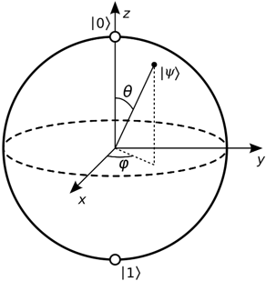
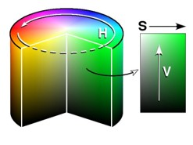
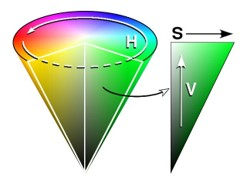
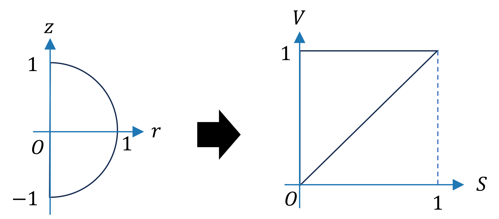
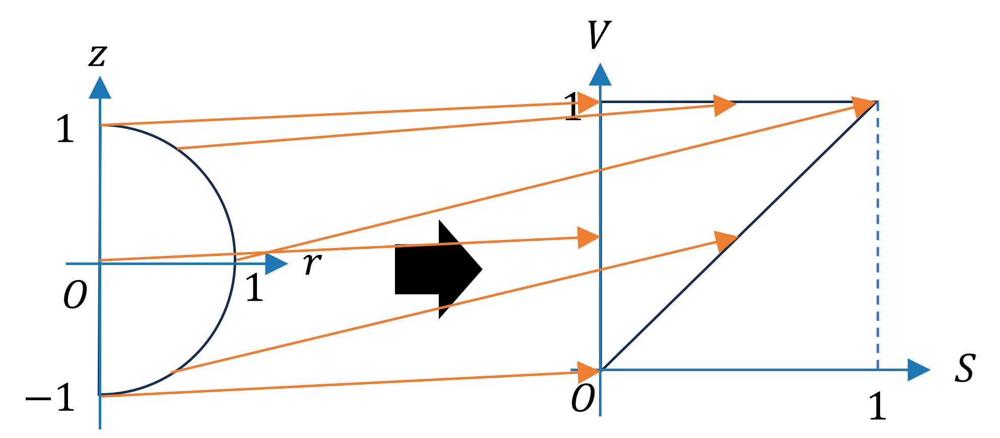

ブロッホ球
ブロッホ球とは、任意の1量子ビット状態を半径1の単位球内の一点として表現する方法である。ここで 状態は混合状態を含む、つまり密度演算子で表現される。
まず、1量子ビット純粋状態\(|\psi \rangle\)は、$$
|\psi \rangle\ = c_0 |0 \rangle\ + c_1 |0 \rangle\ \tag{1}
$$と書ける。ここで、\(c_0, c_1\)は複素数であり、規格化条件\[
|c_0|^2 + |c_1|^2 = 1
\]を満たす。ところで\(\sin^2\theta + \cos^2\theta = 1\)なので、(1)式は、\[
|\psi \rangle\ = e^{i \alpha} \left(\cos(\theta /2) |0\rangle
+ e^{i\phi} \sin(\theta /2) |1\rangle\right) \tag{2}
\]とも書ける。ここで、\(\alpha, \theta, \phi\)は実数である。(1)式では複素数2つ、つまり実数4つ分の
自由度あったのが(2)式では規格化条件を満たすため、自由度が一つ減少している。さらに、
グローバル位相\(e^{i\alpha}\)のみが異なる2つの状態は物理的には同じ状態とみなせるので\(\alpha\)
の自由度は無視して構わない。結果として、1量子ビット純粋状態は2つの実パラメータ\(\theta, \phi\)によって\[
|\psi \rangle\ = \cos(\theta /2) |0\rangle
+ e^{i\phi} \sin(\theta /2) |1\rangle \tag{3}
\]と表せる。これを極座標とみて、単位球面上の一点として表せる。この球のことを
ブロッホ球と呼ぶ。

北極が\(|0\rangle\)、南極が\(|1\rangle\)、\(x\)軸との交点のうち正のものが\(|+\rangle\)、
負のものが\(|-\rangle\)である。
（余裕がある人は確かめてみてほしい。）また、原点から球面上へのベクトルをブロッホベクトルと呼ぶ。
ブロッホベクトルは(3)式から求めてもよいが、実はもっと簡単な方法があり、パウリ行列
\(X, Y, Z\)によって\[
\begin{align}
x &= \langle\psi |X|\psi\rangle\\
y &= \langle\psi |Y|\psi\rangle\\
z &= \langle\psi |Z|\psi\rangle
\end{align} \tag{4}
\]と求めることができる。こうなるように(3)式を定義した、と言うこともできるかもしれない。
これを混合状態に拡張する。(4)式は\[ \begin{align} x &= \mathrm{Tr}( |\psi\rangle \langle\psi |X )\\ y &= \mathrm{Tr}( |\psi\rangle \langle\psi |Y )\\ z &= \mathrm{Tr}( |\psi\rangle \langle\psi |Z )\\ \end{align} \tag{5} \]と書くこともできるので、密度演算子\(\rho\)に対するブロッホベクトルを\[ \begin{align} x &= \mathrm{Tr}(\rho X)\\ y &= \mathrm{Tr}(\rho Y)\\ z &= \mathrm{Tr}(\rho Z)\\ \end{align} \tag{5} \]と定義する。これは球体内部の点となり、特に\(\rho\)が完全混合状態\[ I/2 = \begin{pmatrix} 1/2 && 0\\ 0 && 1/2 \end{pmatrix} \]のときブロッホベクトルはゼロベクトル（つまり球の中心を指す）になる。
HSV色空間（Wikipedia）
コンピュータ上で色を表現する方法としてはRGBがよく知られているが、ここではHSV色空間を用いる。
HSVは、色相 (Hue)、彩度 (Saturation)、明度 (Value) の3変数で色を表現する。ここではそれぞれの変域を
\(0 \le H \lt 2\pi,\ 0 \le S \le 1,\ 0 \le V \le 1\)とする。これは次の図のような円柱内の一点として表せる。
これをこのページではHSV円柱と呼ぶことにする。

しかし人間の視覚は明度が大きいほど彩度の違いを感じやすい。なので円錐のほうがより人間の感覚に即していると考えられる。
こちらはHSV円錐と呼ぶことにする。

ブロッホベクトルから円錐HSVに変換
さて、1量子ビットを色として表現したいので、ブロッホ球内の点をHSV円錐内の点に対応させる必要がある。
どちらも回転対称なので、断面の半円を三角形に対応させることにする。

対応させ方にはいろいろな方法があると思うが、古典ビットの0/1は白/黒で表されることが多いと思うので
\(|0\rangle\)は白、\(|1\rangle\)は黒に対応させることにする。これを満たすように私が作った対応が次のとおりである。
\[
\begin{align}
S &= r = \sqrt{x^2 + y^2}\\
V &= \begin{cases}
\frac{1}{2} + \frac{r}{2} + \frac{z}{2\sqrt{(1- r)^2}}(1-r)\ (r\ne1)\\
1\ (r=1)
\end{cases}
\end{align}\]
円錐HSVに変換から円柱HSVに変換
ここまでで量子状態を円錐HSVとして表現することができた。しかしコンピュータ上の表現は円柱HSVなので、 これに変換する必要がある。これは単純に、\(V\)はそのままに、\[ S \mapsto S/V,\ VがゼロならS=0\] とする。
ここまでの量子状態からHSVへの変換をまとめて、juliaのコードとしたものを以下に示す。
using Yao, Colors
bloch_vector(st::ArrayReg) = bloch_vector(st |> density_matrix)
function bloch_vector(ρ::DensityMatrix)
m = state(ρ)
[real(tr(m * mat(p))) for p in [X, Y, Z]]
end
function state_to_hsv(st::Union{ArrayReg, DensityMatrix})
x,y,z = bloch_vector(st)
r = sqrt(x^2 + y^2)
rz = r≥1 ? 0.0 : z / sqrt(1-r^2)
v = 0.5 + 0.5*r + rz * (0.5 * (1 - r))
s = v == 0 ? 0 : r / v
h = x==0 ? 0.0 : rad2deg(atan(y, x))
HSV(h, s, v)
end